Abstract
For randomized controlled trials (RCTs) with a single intervention
being measured on multiple outcomes, researchers often apply a multiple
testing procedure (such as Bonferroni or Benjamini-Hochberg) to adjust
-values.
Such an adjustment reduces the likelihood of spurious findings, but also
changes the statistical power, sometimes substantially, which reduces
the probability of detecting effects when they do exist. However, this
consideration is frequently ignored in typical power analyses, as
existing tools do not easily accommodate the use of multiple testing
procedures. We introduce the PUMP R package as
a tool for analysts to estimate statistical power, minimum detectable
effect size, and sample size requirements for multi-level RCTs with
multiple outcomes. Multiple outcomes are accounted for in two ways.
First, power estimates from PUMP properly account for the
adjustment in
-values
from applying a multiple testing procedure. Second, as researchers
change their focus from one outcome to multiple outcomes, different
definitions of statistical power emerge. PUMP allows
researchers to consider a variety of definitions of power, as some may
be more appropriate for the goals of their study. The package estimates
power for frequentist multi-level mixed effects models, and supports a
variety of commonly-used RCT designs and models and multiple testing
procedures. In addition to the main functionality of estimating power,
minimum detectable effect size, and sample size requirements, the
package allows the user to easily explore sensitivity of these
quantities to changes in underlying assumptions.
Introduction
The PUMP R package fills in an important
gap in open-source software tools to design multi-level randomized
controlled trials (RCTs) with adequate statistical power. With this
package, researchers can estimate statistical power, minimum detectable
effect size (MDES), and needed sample size for multi-level experimental
designs, in which units are nested within hierarchical structures such
as students nested within schools nested within school districts. The
statistical power is calculated for estimating the impact of a single
intervention on multiple outcomes. The package uses a frequentist
framework of mixed effects regression models, which is currently the
prevailing framework for estimating impacts from experiments in
education and other social policy research.1
To our knowledge, none of the existing software tools for power calculations allow researchers to account for multiple hypothesis tests and the use of a multiple testing procedure (MTP). MTPs adjust -values to reduce the likelihood of spurious findings when researchers are testing for effects on multiple outcomes. This adjustment can result in a substantial change in statistical power, greatly reducing the probability of detecting effects when they do exist. Unfortunately, when designing studies, researchers who plan to test for effects on multiple outcomes and employ MTPs frequently ignore the power implications of the MTPs.
Also, as researchers change their focus from one outcome to multiple
outcomes, multiple definitions of statistical power emerge (Chen et al. (2011); Dudoit, Shaffer, and Boldrick (2003); Senn and Bretz (2007); Westfall, Tobias, and Wolfinger (2011)). The
PUMP package allows researchers to consider multiple
definitions of power, selecting those most suited to the goals of their
study. The definitions of power include:
- individual power: the probability of detecting an effect of a particular size (specified by the researcher) or larger for each hypothesis test. Individual power corresponds to how power is defined when there is focus on a single outcome.
- minimal power: the probability of detecting effects of at least a particular size on at least one outcome. Similarly, the researcher can consider minimal power for any less than the number of outcomes, or fractional powers, such as minimal power.
- complete power: the power to detect effects of at least a particular size on all outcomes.
As noted in Porter (2018), the
prevailing default in many studies–-individual power–-may or may not be
the most appropriate type of power. If the researcher’s goal is to find
statistically significant estimates of effects on most or all primary
outcomes of interest, then their power may be much lower than
anticipated when multiplicity adjustments are taken into account. On the
other hand, if the researcher’s goal is to find statistically
significant estimates of effects on at least one or a small proportion
of outcomes, their power may be much better than anticipated. In both of
these cases, by not accounting for both the challenges and opportunities
arising from multiple outcomes, a researcher may find they have wasted
resources, either by designing an underpowered study that cannot detect
the desired effect sizes, or by designing an overpowered study that had
a larger sample size than necessary. We introduce the PUMP
package to allow for directly answering questions that take multiple
outcomes into account, such as:
- How many schools would I need to detect a given effect on at least three of my five outcomes?
- What size effect can I reliably detect on each outcome, given a planned MTP across all my outcomes?
- How would the power to detect a given effect change if only half my outcomes truly had impact?
The methods in the PUMP package build on those introduced in Porter (2018). This earlier paper focused only on a single RCT design and model — a multisite RCT with the blocked randomization of individuals, in which effects are estimated using a model with block-specific intercepts and with the assumption of constant effects across all units. This earlier paper also did not produce software to assist researchers in implementing its methods. With this current paper and with the introduction of the PUMP package, we extend the methodology to nine additional multi-level RCT designs and models. Also, while Porter (2018) focused on estimates of power, PUMP goes further to also estimate MDES and sample size requirements that take multiplicity adjustments into account.
PUMP extends functionality of the popular PowerUp!
R package (and its related tools in the form of a
spreadsheet and Shiny application), which compute power or MDES for
multi-level RCTs with a single outcome (Dong and
Maynard (2013)). For a wide variety of RCT designs with a single
outcome, researchers can take advantage of closed-form solutions and
numerous power estimation tools. For example, in education and social
policy research, see Dong and Maynard
(2013); Hedges and Rhoads (2010);
Raudenbush et al. (2011). However,
closed-form solutions are difficult or impossible to derive when a MTP
is applied to a setting with multiple outcomes. Instead, we use a
simulation-based approach to achieve estimates of power.
In order to calculate power, the researcher specifies information about the sample size at each level, the minimum detectable effect size for each outcome, the level of statistical significance, and parameters of the data generating distribution. The minimum detectable effect size is the smallest true effect size the study can detect with the desired statistical significance level, in units of standard deviations. An “effect size” generally refers to the standardized mean difference effect size, which “equals the difference in mean outcomes for the treatment group and control group, divided by the standard deviation of outcomes across subjects within experimental groups” (Bloom (2006)). Researchers often use effect sizes to standardize outcomes so that outcomes with different scales can be directly compared.
The package includes three core functions:
-
pump_power()for calculating power given a experimental design and assumed model, parameters, and minimum detectable effect size. -
pump_mdes()for calculating minimum detectable effect size given a target power and sample sizes. -
pump_sample()for calculating the required sample size for achieving a given target power for a given minimum detectable effect size.
For any of these core functions, the user begins with two main
choices. First, the user chooses the assumed design and model of the
RCT. The PUMP package covers a range of multi-level
designs, up to three levels of hierarchy, that researchers typically use
in practice, in which research units are nested in hierarchical groups.
Our power calculations assume the user will be analyzing these RCTs
using frequentist mixed-effects regression models, containing a
combination of fixed or random intercepts and treatment impacts at
different levels. We explain these details in the accompanying paper, in
Section 4 and in the Technical Appendix. Second, the user chooses the
MTP to be applied. PUMP supports five common MTPs —
Bonferroni, Holm, single-step and step-down versions of Westfall-Young,
and Benjamini-Hochberg. After these two main choices, the user must also
make a variety of decisions about parameters of the data generating
distribution.
The package also includes functions that allow users to easily
explore power over a range of possible values of parameters. This
exploration encourages the user to determine the sensitivity of
estimates to different assumptions. PUMP also visually
displays results. These additional functions include:
-
pump_power_grid(),pump_mdes_grid(), andpump_sample_grid()for calculating the given output over a range of possible parameter values. -
update()to re-run an existing calculation with a small number of parameters updated. -
plot()onPUMP-generated objects to generate plots (including grid outputs).
The authors of the PUMP package have also created a web
application built with R Shiny. This web application calls the
PUMP package and allows users to conduct calculations with
a user-friendly interface, but it is less flexible than the package,
with a focus on simpler scenarios (e.g., 10 or fewer outcomes). The app
can be found at .
Case study: Diplomas Now
We illustrate our package using an example of a published RCT that
evaluated a secondary school model called Diplomas Now. The Diplomas Now
model is designed to increase high school graduation rates and
post-secondary readiness. Evaluators conducted a RCT comparing schools
who implemented the model to business-as-usual. We refer to this example
throughout this paper to illustrate key concepts and to illustrate the
application of the PUMP package.
The Diplomas Now model, created by three national organizations, Talent Development, City Year, and Communities In Schools, targets underfunded urban middle and high schools with many students who are not performing well academically. The model is designed to be robust enough to transform high-poverty and high-needs middle and high schools attended by many students who fall off the path to high school graduation. Diplomas Now, with MDRC as a partner, was one of the first validation grants awarded as part of the Investing in Innovation (i3) competition administered by the federal Department of Education.
We follow the general design of the Diplomas Now evaluation, conducted by MDRC. The RCT contains three levels (students within schools within districts) with random assignment at level two (schools). The initial evaluation, included two cohorts of schools with each cohort implementing for two years (2011-2013 for Cohort 1 and 2012-2014 for Cohort 2). The cohorts included 62 secondary schools (both middle and high schools) in 11 school districts that agreed to participate. Schools in the active treatment group were assigned to implement the Diplomas Now model, while the schools in the control group continued their existing school programs or implemented other reform strategies of their choosing (Corrin et al. (2016).) The MDRC researchers conducted randomization of the schools within blocks defined by district, school type, and year of roll-out. After some schools were dropped from the study due to structural reasons, the researchers were left with 29 high schools and 29 middle schools grouped in 21 random assignment blocks. Within each block, schools were randomized to the active treatment or business-as-usual, resulting in 32 schools in the treatment group, and 30 schools in the control group.
The evaluation focused on three categories of outcomes: Attendance, Behavior, and Course performance, called the “ABC’s”, with multiple measures for each category. In addition, the evaluation measured an overall ABC composite measures of whether a student is above given thresholds on all three categories. This grouping constitutes 12 total outcomes of interest. Evaluating each of the 12 outcomes independently would not be good practice, as the chance of a spurious finding would not be well controlled. The authors of the MDRC report pre-identified three of these outcomes as primary outcomes before the start of the study in order to reduce the problem of multiple testing. We, by contrast, use this example to illustrate what could be done if there was uncertainty as to which outcomes should be primary. In particular, we illustrate how to conduct a power analysis to plan a study where one uses multiple testing adjustment, rather than predesignation, to account for the multiple outcome problem.
There are different guidelines for how to adjust for groupings of multiple outcomes in education studies. For example, Schochet (2008) recommends organizing primary outcomes into domains, conducting tests on composite domain outcomes, and applying multiplicity corrections to composites across domains. The What Works Clearinghouse applies multiplicity corrections to findings within the same domain rather than across different domains. We do not provide recommendations for which guidelines to follow when investigating impacts on multiple outcomes. Rather, we address the fact that researchers across many domains are increasingly applying MTPs and therefore need to correctly estimate power, MDES and sample size requirements accounting for this choice. In our example, we elect to do a power analysis separately for each of the three outcome groups of the ABC outcomes to control family-wise error rather than overall error. This strategy means we adjust for the number of outcomes within each group independently. For illustration purposes, we focus on one outcome group, attendance, which we will assume contains five separate outcomes.
User choices
Designs and models
When planning a study, the researcher first has to identify the design of the experiment, including the number of levels, and the level at which randomization occurs. These decisions can be a mix of the realities of the context (e.g., the treatment must be applied at the school level, and students are naturally nested in schools, making for a cluster randomization), or deliberate (e.g., the researcher groups similar schools to block their experiment in an attempt to improve power). Second, based on the design and the inferential goals of the study, the researchers chooses an assumed model, including whether intercepts and treatment effects should be treated as constant, fixed, or random. For the same experimental design, the analyst can sometimes choose from a variety of possible models, and these two decisions should be kept conceptually separated from each other.
The design. The PUMP package supports designs
with one, two, or three levels, with randomization occurring at any
level. For example, a design with two levels and randomization at level
one is a blocked design (or equivalently a multisite experiment), where
level two forms the blocks (blocks being groups of units, some of which
are treated and some not). Ideally, the blocks in a trial will be groups
of relatively homogenous units, but frequently they are a consequence of
the units being studied (e.g., evaluations of college supports, with
students, the units, nested in colleges, the blocks). A design with two
levels and randomization at level two is commonly called a cluster
design (e.g., a collection of schools, with treatment applied to a
subset of the schools, with outcomes at the student level); here the
schools are the clusters, with a cluster being a collection of units
which is entirely treated or entirely not. We can also have both
blocking and clustering: randomizing schools within districts, creating
a series of cluster-randomized experiments, would be a blocked (by
district), cluster-randomized experiment, with randomization at level
two.
The model. Given a design, the researcher can select a model via a few modeling choices. In particular the researcher has to decide, for each level beyond the first, about the intercepts and the treatment impacts:
- Whether level two and level three intercepts are:
- fixed: we have a separate intercept for each unit.
- random: we have a separate intercept for each unit as above, but model the collection of intercepts as Normally distributed, allowing for partial pooling.
- Whether level two and level three treatment effects are:
- constant: we model all units within a group as having the same single average impact.
- fixed: we allow each block or cluster within a level to have its own individual estimated impact (we can only do this if we have treated and control units within said block or cluster).
- random: we allow variation as with fixed, but model the collection of treatment impacts as Normally distributed around a grand mean mean impact. This is implicitly allowing for the sample as being representative of a larger super-population, in terms of treatment impact estimation.
We denote the research design by
,
followed by the number of levels and randomization level, so
d3.1 is a three level design with randomization at level
one. The model is denoted by
,
followed by the level and the assumption for the intercepts, either
or
and then the assumption for the treatment impacts,
,
,
or
.
For example, m3ff2rc means at level
,
we assume fixed intercepts and fixed treatment impacts, and at level two
we assume random intercepts and constant treatment impacts. The full
design and model are specified by concatenating these together,
e.g. d2.1_m3fc. The Diplomas Now model, for example, is
d3.2_m3fc2rc.
The full list of supported design and model combinations is below.
The user can see the list by calling pump_info(), which
provides the designs and models, MTPs, power definitions, and model
parameters. We also include the corresponding names from the PowerUP!
package where appropriate. For more details about each combination of
design and model, see the Technical Appendix.
Multiple testing procedures
Here we provide a review of the multiple testing procedures supported
by the PUMP package:
- Bonferroni: adjusts -values by multiplying them by to ensure strong control of the FWER. Bonferroni is a simple procedure, but the most conservative.
- Holm: a step-down version of Bonferroni. Starting from smallest to largest, -values are sequentially adjusted by different multipliers. Holm is less conservative than Bonferroni for larger -values.
- Benjamini-Hochberg: A sequential, step-up procedure that controls the FDR. Using the BH method, only null hypotheses with -values below a certain threshold are rejected, where the threshold is determined by the number of tests and the level .
- Single-step Westfall-Young: A permutation-based procedure for controlling the FWER, which directly takes into account the joint correlation structure of the outcomes. In the single-step approach, all outcomes are adjusted by using the permuted distribution of the minimum -value. Although Westfall-Young procedures are less conservative while still protecting against false discoveries, they are computationally very intensive.
- Step-down Westfall-Young: A similar approach to the single-step procedure, except that outcomes are adjusted sequentially from smallest to largest according to the permuted distributions of the corresponding sequential -values.
For a more detailed explanation of each MTP, see Appendix A of Porter (2018).
The following table from Porter (2018)
summarizes the important features for each of the MTPs supported by
PUMP.
| Procedure | Control | Single-step or stepwise | Accounts for correlation |
|---|---|---|---|
| Bonferroni (BF) | FWER | single-step | No |
| Holm (HO) | FWER | stepwise | No |
| Westfall-Young Single-step (WY-SS) | FWER | single-step | Yes |
| Westfall-Young Step-down (WY-SD) | FWER | stepwise | Yes |
| Benjamini-Hochberg (BH) | FDR | stepwise | No |
Model parameters
The table below shows the parameters that influence , the standard error, for different designs and models.
A few parameters warrant more explanation.
The quantity is the unconditional Intraclass Correlation, and gives a measure of variation at different levels of the model. For each outcome, the ICC for each level is defined as the ratio of the variance at that level divided by the overall variance of the individual outcomes. The ICC includes the variation due to covariates.
For each outcome, the quantity omega () for each level is the ratio between impact variation at that level and variation in intercepts (including covariates) at that level. It is a measure of treatment impact heterogeneity.
The expressions are the percent of variation at a particular level predicted by covariates specific to that level. For simplicity we assume covariates at a level are group mean centered, so only covariates at a particular level explain variance at that level.
For precise formulae of these expressions, see the Technical Appendix, which outlines the assumed data-generating process, and the resulting expressions for , , and .
In addition to design parameters, there are additional parameters that control the precision of the power estimates themselves:
-
tnumis the number of test statistics generated in order to estimate power. A larger number of test statistics results in greater computation time, but also a more precise estimate of power. Note that thepump_mdes()andpump_sample()have multipletnumparameters controlling the precision of the search. -
Bis the number of Westfall-Young permutations. Again, there is a tradeoff between precision and computation time. -
parallel.WY.coresspecifies the number of cores to use for parallel computation of the Westfall-Young Step-Down procedure, which is the most computationally intensive. The default of1does not result in parallel computation. Parallelization is done usingparApplyfrom theparallelpackage.
Package illustration
In this section, we illustrate how to use the PUMP
package, using our example motivated by the Diplomas Now study. Given
the study’s design, we ask a natural initial question: What size of
impact could we reasonably detect after using a MTP to adjust
-values
to account for our multiple outcomes?
We mimic the planning process one might use for planning a study similar to Diplomas Now (e.g., if we were planning a replication trial in a slightly different context). To answer this question we therefore first have to decide on our experimental design and modeling approach. We also have to determine values for the associated design parameters that accompany these choices. In the following sections we walk through selecting these parameters (sample size, control variables, intraclass correlation coefficients, impact variation, and correlation of outcomes). We calculate MDES for the resulting context and determine how necessary sample sizes change depending on what kind of power we desire. We finally illustrate some sensitivity checks, looking at how MDES changes as a function of rho, the correlation of the test statistics.
Establishing needed design parameters
To conduct power, MDES, and sample size calculations, we first specify the design, sample sizes, analytic model, and level of statistical significance. We also must specify parameters of the data generating distribution that match the selected design and model. All of these numbers have to be determined given resource limitations, or estimated using prior knowledge, pilot studies, or other sources of information.
We next discuss selection of all needed design parameters and modeling choices. For further discussion of selecting these parameters see, for example Bloom (2006) and Dong and Maynard (2013). For discussion in the multiple testing context, especially with regards to the overall power measures such as minimal or complete power, see Porter (2018); the findings there are general, as they are a function of the final distribution of test statistics. The key insight is that power is a function of only a few summarizing elements: the individual-level standard errors, the degrees of freedom, and the correlation structure of the test statistics. Once we have these elements, regardless of the design, we can proceed.
Analytic model. We first need to specify how we will analyze our data; this choice also determines which design parameters we will need to specify. Following the original Diplomas Now report, we plan on using a multi-level model with fixed effects at level three, a random intercept at level two, and a single treatment coefficient. We represent this model as “m3fc2rc.” The “3fc” means we are including block fixed effects, and not modeling any treatment impact variation at level three. The “2rc” means random intercept and no modeled variation of treatment within each block (the “c” is for “constant”). We note that the Diplomas Now report authors call their model a “two-level” model, but this is not quite aligned with the language of this package. In particular, fixed effects included at level two are actually accounting for variation at level three; we therefore identify their model as a three level model with fixed effects at level three.
Sample sizes. We assume equal size randomization blocks and schools, as is typical of most power analysis packages. For our context, this gives about three schools per randomization block; we can later do a sensitivity check where we increase and decrease this to see how power changes. The Diplomas Now report states there were 14,950 students, yielding around 258 students per school. Normally we would use the geometric means of schools per randomization block and students per school as our design parameters, but that information is not available in the report. We assume 50% of the schools are treated; our calculations will be approximate here in that we could not actually treat exactly 50% in small and odd-sized blocks.
Control variables. We next need values for the of the possible covariates. The report does not provide these quantities, but it does mention covariate adjustment in the presentation of the model. Given the types of outcomes we are working with, it is unlikely that there are highly predictive individual-level covariates, but our prior year school-average attendance measures are likely to be highly predictive of corresponding school-average outcomes. We thus set and . We assume five covariates at level one and three at level two; this decision, especially for level one, usually does not matter much in practice, unless sample sizes are very small (the number of covariates along with sample size determine the degrees of freedom for our planned tests).
ICCs. We also need a measure of where variation occurs: the individual, the school, or the randomization block level. We capture this with Intraclass Correlation Coefficients (ICCs), one for level two and one for level three. ICC measures specify overall variation in outcome across levels: e.g., do we see relatively homogeneous students within schools that are quite different, or are the schools generally the same with substantial variation within them? We typically would obtain ICCs from pilot data or external reports on similar data. We here specify a level-two ICC of 0.05, and a level-three ICC of 0.40. We set a relatively high level three ICC as we expect our school type by district blocks to isolate variation; in particular we might believe middle and high school attendance rates would be markedly different.
Correlation of outcomes. We finally need to specify the
number and relationship among our outcomes and associated
test-statistics. For illustration, we select attendance as our outcome
group. We assume we have five different attendance measures. The main
decision regarding outcomes is the correlation of our test statistics.
As a rough proxy, we use the correlation of the outcomes at the level of
randomization; in our case this would be the correlation of
school-average attendance within block. We believe the attendance
measures would be fairly related, so we select rho = 0.40
for all pairs of outcomes. This value is an estimate, and we strongly
encourage exploration of different values of this correlation choice as
a sensitivity check for any conducted analysis. Selecting a candidate
rho is difficult, and will be new for those only familiar with power
analyses of single outcomes; we need to more research in the field, both
empirical and theoretical, to further guide this choice.
If the information were available, we could specify different values
for the design parameters such as the
s
and
s
for each outcome, if we thought they had different characteristics; for
simplicity we do not do this here. The PUMP package also
allows specifying different pairwise correlations between the test
statistics of the different outcomes via a matrix of
s
rather than a single
;
also for simplicity, we do not do that here.
Once we have established initial values for all needed parameters, we first conduct a baseline calculation, and then explore how MDES or other quantities change as these parameters change.
Calculating MDES
We now have an initial planned design, with a set number of schools and students. But is this a large enough experiment to reliably detect reasonably sized effects? To answer this question we calculate the minimal detectable effect size (MDES), given our planned analytic strategy, for our outcomes.
To identify the MDES of a given setting we use the
pump_mdes method, which conducts a search for a MDES that
achieves a target level of power. The MDES depends on all the design and
model parameters discussed above, but also depends on the type of power
and target level of power we are interested in. For example, we could
determine what size effect we can reliably detect on our first outcome,
after multiplicity adjustment. Or, we could determine what size effects
we would need across our five outcomes to reliably detect an impact on
at least one of them. We set our goal by specifying the type
(power.definition) and desired power
(target.power).
Here, for example, we find the MDES if we want an 80% chance of detecting an impact on our first outcome when using the Holm procedure:
m <- pump_mdes(
d_m = "d3.2_m3fc2rc", # choice of design and analysis strategy
MTP = "HO", # multiple testing procedure
target.power = 0.80, # desired power
power.definition = "D1indiv", # power type
M = 5, # number of outcomes
J = 3, # number of schools per block
K = 21, # number districts
nbar = 258, # average number of students per school
Tbar = 0.50, # prop treated
alpha = 0.05, # significance level
numCovar.1 = 5, # number of covariates at level 1
numCovar.2 = 3, # number of covariates at level 2
R2.1 = 0.1, R2.2 = 0.7, # explanatory power of covariates for each level
ICC.2 = 0.05, ICC.3 = 0.4, # intraclass correlation coefficients
rho = 0.4 ) # how correlated outcomes areThe results are easily made into a nice table via the
knitr kable() command:
knitr::kable( m, digits = 3 ) %>%
kableExtra::kable_styling( position = "center" )| MTP | Adjusted.MDES | D1indiv.power |
|---|---|---|
| HO | 0.105 | 0.807 |
The answers pump_mdes() gives are approximate as we are
calculating them via monte carlo simulation. To control accuracy, we can
specify a tolerance (tol) of how close the estimated power
needs to be to the desired target along with the number of iterations in
the search sequence (via start.tnum, tnum, and
final.tnum). The search will stop when the estimated power
is within tol of target.power, as estimated by
final.tnum iterations. Lower tolerance and higher
tnum values will give more exact results (and take more
computational time).
Changing the type of power is straightforward: for example, to identify the MDES for minimal power (i.e., what effect do we have to assume across all observations such that we will find at least one significant result with 80% power?), we simply update our result with our new power definition:
m2 <- update( m, power.definition = "min1" )#> mdes result: d3.2_m3fc2rc d_m with 5 outcomes
#> target min1 power: 0.80
#> MTP Adjusted.MDES min1.power SE
#> HO 0.08048574 0.78425 0.01
#> (5 steps in search)The update() method can replace any number of arguments
of the prior call with new ones, making exploration of different
scenarios very straightforward.2 Our results show that if we just want to
detect at least one outcome with 80% power, we can reliably detect an
effect of size
(assuming all five outcomes have effects of at least that size).
When estimating power for multiple outcomes, it is important to
consider cases where some of the outcomes in fact have null, or very
small, effects, to hedge against circumstances such as one of the
outcomes not being well measured. One way to do this is to set two of
our outcomes to no effect with the numZero parameter:
m3 <- update( m2, numZero = 2 )#> mdes result: d3.2_m3fc2rc d_m with 5 outcomes
#> target min1 power: 0.80
#> MTP Adjusted.MDES min1.power SE
#> HO 0.08970923 0.79125 0.01
#> (13 steps in search)The MDES goes up, as expected: when there are not effects on some
outcomes, there are fewer good chances for detecting an effect.
Therefore, an increased MDES (for the nonzero outcomes) is required to
achieve the same level of desired power (80%). Below we provide a deeper
dive into the extent to which numZero can effect power
estimates.
Determining necessary sample size
The MDES calculator tells us what we can detect given a specific
design. We might instead want to ask how much larger our design would
need to be in order to achieve a desired MDES. In particular, we might
want to determine the needed number of students per school, the number
of schools, or the number of blocks to detect an effect of a given size.
The pump_sample method will search over any one of
these.
Assuming we have three schools per block, we first calculate how many blocks we would need to achieve a MDES of 0.10 for minimal power (this answers the question of how big of an experiment do we need in order to have an 80% chance of finding at least one outcome significant, if all outcomes had a true effect size of 0.10):
smp <- pump_sample(
d_m = "d3.2_m3fc2rc",
MTP = "HO",
typesample = "K",
target.power = 0.80, power.definition = "min1", tol = 0.01,
MDES = 0.10, M = 5, nbar = 258, J = 3,
Tbar = 0.50, alpha = 0.05, numCovar.1 = 5, numCovar.2 = 3,
R2.1 = 0.1, R2.2 = 0.7, ICC.2 = 0.05, ICC.3 = 0.40, rho = 0.4 )
print( smp )#> sample result: d3.2_m3fc2rc d_m with 5 outcomes
#> target min1 power: 0.80
#> MTP Sample.type Sample.size min1.power SE
#> HO K 16 0.797 0.01
#> (18 steps in search)We would need 15 blocks, rather than the originally specified 21, giving 45 total schools in our study, to achieve 80% minimal power.
We recommend checking MDES and sample-size calculators, as the
estimation error combined with the stochastic search can give results a
bit off the target in some cases. A check is easy to do; simply run the
found design through pump_power(), which directly
calculates power for a given scenario, to see if we recover our
originally targeted power (we can use update() and set the
type to power to pass all the design parameters
automatically). When we do this, we can also increase the number of
iterations to get more precise estimates of power, as well:
p_check <- update( smp, type = "power", tnum = 20000,
long.table = TRUE )| power | None | HO |
|---|---|---|
| individual outcome 1 | 0.73 | 0.57 |
| individual outcome 2 | 0.73 | 0.57 |
| individual outcome 3 | 0.73 | 0.57 |
| individual outcome 4 | 0.73 | 0.57 |
| individual outcome 5 | 0.73 | 0.57 |
| mean individual | 0.73 | 0.57 |
| 1-minimum | 0.84 | |
| 2-minimum | 0.69 | |
| 3-minimum | 0.56 | |
| 4-minimum | 0.44 | |
| complete | 0.37 |
When calculating power directly, we get power for all the implemented definitions of power applicable to the design.
In the above, the first five rows are the powers for rejecting each of the five outcomes—they are (up to simulation error) the same since we are assuming the same MDES and other design parameters for each. The “mean individual” is the mean individual power across all outcomes. The first column is power without adjustment, and the second has our power with the listed -value adjustment.
The next rows show different multi-outcome definitions of power. In
particular, 1-minimum shows the chance of rejecting at
least one hypotheses. The complete row shows the power to
reject all hypotheses; it is only defined if all outcomes are specified
to have a non-zero effect.3
We can look at a power curve of our pump_sample() call
to assess how sensitive power is to our level two sample size:4
plot( smp )
Though increasing tnum is useful for checking the power
calculation, it also increases computation time. Thus, for future
calculations we save a call with the default tnum to reduce
computation time.
pow <- update( p_check, tnum = 10000 )Remark. In certain settings, a wide range of sample sizes
may result in very similar levels of power. In this case, the algorithm
may return a sample size that is larger than necessary. This pattern
does not occur for the sample size at the highest level of the
hierarchy, and only for occurs for sample sizes at lower levels of the
hierarchy; e.g. for nbar for all models, and for
nbar and J for three level models. In
addition, due to the nature of the search algorithm, occasionally the
algorithm may not converge. For a more detailed discussion of these
challenges, see the package sample size vignette.
Comparing adjustment procedures
It is easy to rerun the above using the Westfall-Young Stepdown
procedure (this procedure is much more computationally intensive to
run), or other procedures of interest. Alternatively, simply provide a
list of procedures you wish to compare. If you provide a list, the
package will re-run the power calculator for each item on the list; this
can make the overall call computationally intensive. Here we obtain
power for our scenario using Bonferroni, Holm and Westfall-Young
adjustments, and plot the results using the default plot()
method:

To speed up computation, we could add
parallel.WY.cores = 2 (or however many cores we wish to
allocate) to the call to parallelize the computation. We could also
reduce tnum to decrease computation time.
The more sophisticated (and less conservative) adjustment exploits
the correlation in our outcomes (rho = 0.4) to provide
higher individual power. Note, however, that we do not see elevated
rates for
minimal
power. Accounting for the correlation of the test statistics when
adjusting
-values
can drive some power (individual power) up, but on the flip side
power
can be driven down as the lack of independence between tests gives fewer
chances for a significant result. See Porter
(2018) for further discussion; while the paper focuses on the
multisite randomized trial context, the lessons learned there apply to
all designs as the only substantive differences between different design
and modeling choices is in how we calculate the unadjusted distribution
of their test statistics.
Exploring sensitivity to design parameters
Within the pump package we have two general ways of exploring design
sensitivity. The first is with update(), which allows for
quickly generating a single alternate scenario. To explore sensitivity
to different design parameters more systematically, use the
grid() functions, which calculate power, mdes, and sample
size for all combinations of a set of passed parameter values. There are
two main differences between the two approaches. First,
update() allows for different values of a parameter for the
different outcomes; the grid approach, by contrast, is more
limited in this regard, and assumes the same parameter value across
different outcomes. Second, the grid functions are a
powerful tool for systematically exploring many possible combinations,
while update() only allows the user to explore one value at
a time.
We first illustrate the update() approach, and then turn
to illustrating grid() across three common areas of
exploration: Intraclass Correlation Coefficients (ICCs), the correlation
of test statistics, and the assumed number of non-zero effects. The last
two are particularly important for multiple outcome contexts.
Exploring power with update()
Update allows for a quick change of some of the set of parameters
used in a prior call; we saw update() used several times
above. As a further example, here we examine what happens if the ICCs
are more equally split across levels two and three:
#> power result: d3.2_m3fc2rc d_m with 5 outcomes
#> MTP D1indiv D2indiv D3indiv D4indiv D5indiv indiv.mean min1
#> None 0.261 0.257 0.268 0.262 0.263 0.262
#> SE ( 0.072 ) ( 0.072 ) ( 0.072 ) ( 0.072 ) ( 0.072 )
#> HO 0.108 0.109 0.110 0.110 0.112 0.110 0.294
#> min2 min3 min4 complete df1
#> 29
#>
#> 0.133 0.067 0.037 0.028
#> 0.000 <= MCSE <= 0.002We immediately see that our assumption of substantial variation in level three matters a great deal for power.
When calculating power for a given scenario, it is also easy to vary many of our design parameters by outcome. For example, if we thought we had better predictive covariates for our second outcome, we might try:
p_d <- update( pow,
R2.1 = c( 0.1, 0.3, 0.1, 0.2, 0.2 ),
R2.2 = c( 0.4, 0.8, 0.3, 0.2, 0.2 ) )
print( p_d )#> power result: d3.2_m3fc2rc d_m with 5 outcomes
#> MTP D1indiv D2indiv D3indiv D4indiv D5indiv indiv.mean min1
#> None 0.460 0.880 0.411 0.365 0.368 0.497
#> SE ( 0.052 ) ( 0.031 ) ( 0.055 ) ( 0.059 ) ( 0.059 )
#> HO 0.269 0.701 0.237 0.207 0.207 0.324 0.754
#> min2 min3 min4 complete df1
#> 29
#>
#> 0.413 0.238 0.138 0.100
#> 0.001 <= MCSE <= 0.002Notice how the individual powers are heavily impacted. The -minimal powers naturally take the varying outcomes into account as we are calculating a joint distribution of test statistics that will have the correct marginal distributions based on these different design parameter values.
After several update()s, we may lose track of where we
are; to find out, we can always check details with
print_context() or summary():
summary( p_d )
#> power result: d3.2_m3fc2rc d_m with 5 outcomes
#>
#> MDES vector: 0.1, 0.1, 0.1, 0.1, 0.1
#> nbar: 258 J: 3 K: 16 Tbar: 0.5
#> alpha: 0.05
#> Level:
#> 1: R2: 0.1 / 0.3 / 0.1 / 0.2 / 0.2 (5 covariates)
#> 2: R2: 0.4 / 0.8 / 0.3 / 0.2 / 0.2 (3 covariates) ICC: 0.05 omega: 0
#> 3: fixed effects ICC: 0.4 omega: 0
#> rho = 0.4
#> MTP D1indiv D2indiv D3indiv D4indiv D5indiv indiv.mean min1
#> None 0.460 0.880 0.411 0.365 0.368 0.497
#> SE ( 0.052 ) ( 0.031 ) ( 0.055 ) ( 0.059 ) ( 0.059 )
#> HO 0.269 0.701 0.237 0.207 0.207 0.324 0.754
#> min2 min3 min4 complete df1
#> 29
#>
#> 0.413 0.238 0.138 0.100
#> 0.001 <= MCSE <= 0.002
#> (tnum = 10000)Using update allows for targeted comparison of major choices, but if
we are interested in how power changes across a range of options, we can
do this more systematically with the grid() functions, as
we do next.
Exploring the impact of the ICC
We above saw that the ICC does impact power considerably. We next
extend this evaluation by exploring a range of options for both level
two and three ICCs, so we can assess whether our power is sufficient
across a set of plausible values. The update_grid() call
makes this straightforward: we pass our baseline scenario along with
lists of parameters to additionally explore. To decrease computation
time and achieve less precise estimates in this exploratory phase, we
decrease tnum. We can then easily visualize the variation
in min1 power by calling plot() on the object.
grid <- update_grid( pow,
ICC.2 = seq( 0, 0.3, 0.05 ),
ICC.3 = seq( 0, 0.60, 0.20 ) )
plot( grid, power.definition = "min1" )
Our plots show the impact of one varying factor averaged over the
other factors, like you would get with a plot for a main effect in a
fully interacted experiment. Note that in addition to
update_grid(), there are also base functions
pump_power_grid(), pump_mdes_grid(), and
pump_sample_grid().
We see that higher ICC.2 radically reduces power to detect anything and ICC.3 does little. To understand why, we turn to our standard error formula for this design and model: In the above, the students per group makes the second term very small compared to the first, regardless of the ICC.3 value. The first term, however, is a direct scaling of ICC.2; changing it will change the standard error, and therefore power, a lot. All provided designs and models implemented in the package are discussed, along with corresponding formula such as these, in our technical supplement accompanying this paper and package.
For grid searches we recommend reducing the number of permutations,
via tnum, to speed up computation. As tnum
shrinks, we will get increasingly rough estimates of power, but even
these rough estimates can help us determine trends.
The grid() functions provide easy and direct ways of
exploring how power changes as a function of the design parameters. We
note, however, that in order to keep syntax simple, they do not allow
different design parameters, including MDES, by outcome. This is to keep
package syntax simpler. When faced with contexts where it is believed
that these parameters do vary, we recommend using average values for the
broader searches, and then double-checking a small set of potential
final designs with the pump_power() method.
Exploring the impact of rho
The correlation of test statistics,
,
is a critical parameter for how power will play out across the multiple
tests. For example, with Westfall-Young, we saw that the correlation can
improve our individual power, as compared to Bonferroni. We might not
know what will happen to
minimal
power, however: on one hand, correlated statistics make individual
adjustment less severe, and on the other correlation means we succeed or
fail all together. We can explore this question relatively easily by
letting rho vary as so:
gridRho <- update_grid( pow,
MTP = c( "BF", "WY-SD" ),
rho = seq( 0, 0.9, by = 0.15 ),
tnum = 1000,
B = 3000 )We then plot our results.
plot( gridRho )
First, we see the benefit of the Westfall-Young single-step procedure is minimal, as compared to Bonferroni. Second, the impact on individual adjustment is flat, as anticipated. Third, across a very broad range of rho, we maintain good minimal power. Complete power climbs as correlation increases, and minimal power is generally unchanged.
Exploring the impact of null outcomes
We finally explore varying the number of outcomes with no effects.
This exploration is an important way to hedge a design against the
possibility that some number of the identified outcomes are measured
poorly, or are simply not impacted by treatment. We use a grid search,
varying the number of outcomes that have no treatment impact via the
numZero design parameter:
gridZero <- update_grid( pow,
numZero = 0:4,
M = 5 )
plot( gridZero, nrow = 1 )
There are other ways of exploring the impact of weak or null effects
on some outcomes. In particular, the pump_power() and
pump_sample() methods allow the researcher to provide an
MDES vector with different values for each outcome, including 0s for
some outcomes. The grid() functions, by contrast, take a
single MDES value for the non-null outcomes, with a separate
specification of how many of the outcomes are 0. (This single value plus
numZero parameter also works with pump_power()
if desired.)
Methods for PUMP objects
For user reference, we wrap up with a brief summary of methods that
can be applied to PUMP-generated objects.
The PUMP package returns two types of S3 objects.
-
pumpresultobjects are returned from single scenario calls:pump_power(),pump_mdes(),pump_sample(), and calls toupdate(). -
pumpgridresultobjects are returned from grid calls:pump_power_grid(),pump_mdes_grid(),pump_sample_grid(), and calls toupdate_grid().
The package has a variety of methods that can be called directly on
pumpresult objects.
-
print()displays a concise summary of the most relevant inputs and results of the call. -
summary()prints a more extensive output, containing a full summary of both the full list of inputs and the results of the call. -
print_context()provides a summary of the user inputs, including the design and model and the parameter values. -
plot()returns different plots tailored to whether the results are for power, MDES, or sample size:- For power objects, it displays power across all power definitions and MTPs.
- For MDES and sample size objects, by default it displays a power curve showing how power changes as sample size or MDES changes.
- For MDES and sample size objects, the user can instead request a
diagnostic plot of the power search algorithm using
type = "search".
-
power_curve()returns a data frame of power values over a range of MDES or sample size values. -
search_path()returns the search history of the search algorithm for MDES and sample size calls. -
transpose_power_table()converts a power table between wide and long formats. -
as.data.frame()casts the object to a data frame of the results. -
gen_sim_data()generates a set of simulated data using a data-generating process from the assumed design, model, and parameters. For more details about functions to simulate data, see the package vignette on simulating data. -
check_cor()checks the correlation between test statistics using a simulation approach.
Many of the above methods also apply to pumpgridresult
objects, although some are not relevant to grid objects. The main
difference in behavior between the pumpresult and
pumpgridresult objects is the output of plot()
function. For an example of plot() called on a
pumpresult object, see Figure . In contrast, for an example
of plot() called on a grid object, see Figure . For grid
objects, the plot() function plots a facet wrap displaying
how power changes across all MTPs, power definitions, and varying
parameters provided during the grid call. If the user wants a smaller
set of results, they can specify a single power.definition,
or use var.vary to only plot variation in one parameter
value. If the grid call varied multiple parameters, then each plot
averages power across all other factors to plot main effects. For
example, in the ICC grid figure in “Exploring the impact of the ICC”,
the first plot averages over all values of ICC.3 to show
how power varies with just ICC.2, and the second plot does
the opposite.